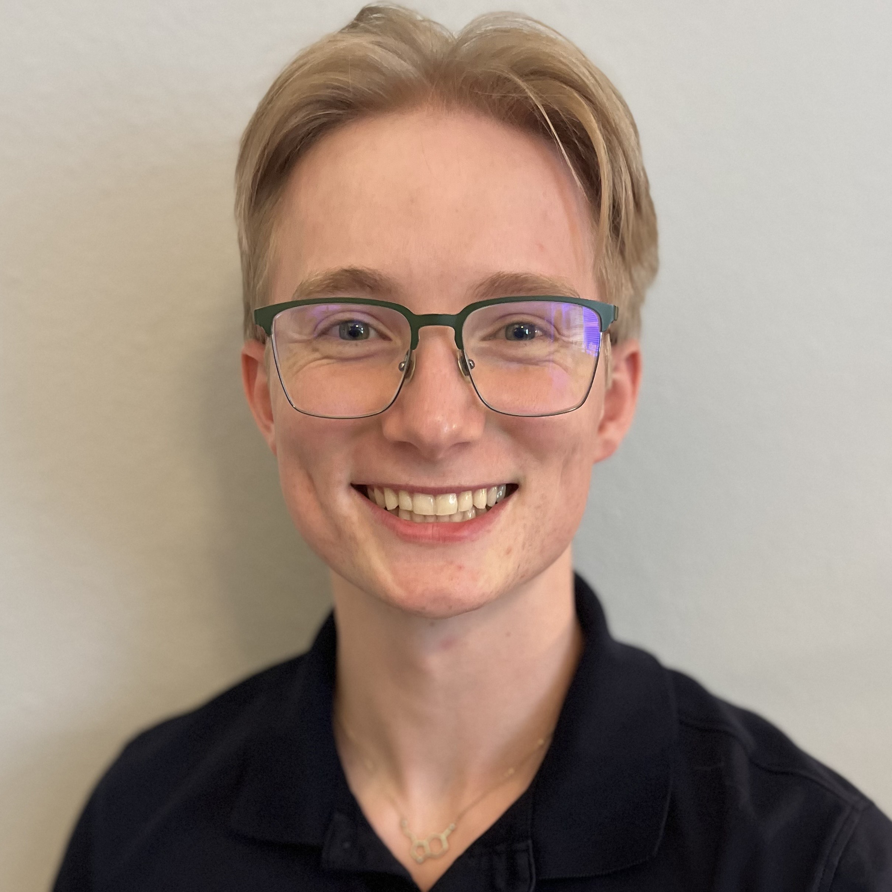
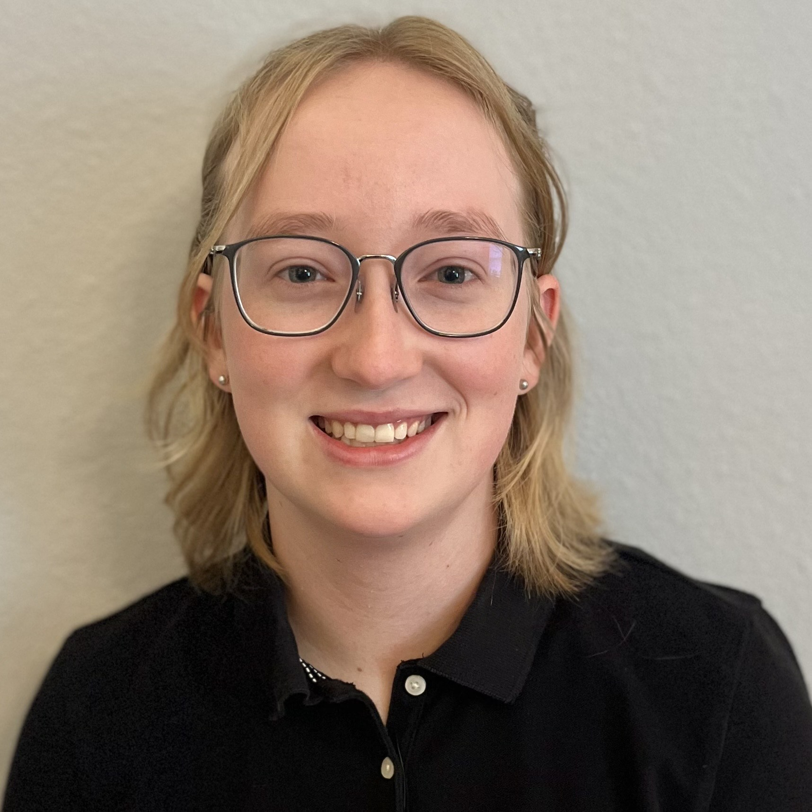

About Us
Madeleine and James Grussing are a sibling team dedicated to improving access to clear, reliable cancer education.
 About James
James is a Pre-Medical undergraduate Biology student with a strong interest in oncology and preventive medicine. He currently works at Moffitt Cancer Center as a Lab Assistant and interns with Moffitt’s Bioengineering research lab. James developed the educational content for Cancer Info Hub, drawing from academic research and evidence-based guidelines to create approachable, accurate resources on cancer symptoms, screening, and prevention. James is passionate about improving access to healthcare and health literacy by helping patients take proactive steps in their care.
About Madeleine
Madeleine is an Information Technology major with a focus on web development and user-centered design. She created the website infrastructure and layout, ensuring the platform is easy to navigate and accessible to a wide audience. Her goal is to support James’s work by making complex medical information clear and engaging through thoughtful design.
Our Goal
Together, they created Cancer Info Hub to empower individuals with accurate, approachable resources on cancer symptoms, screening, and prevention. Looking ahead, they plan to expand this initiative and continue working on projects that promote health literacy and access to care.